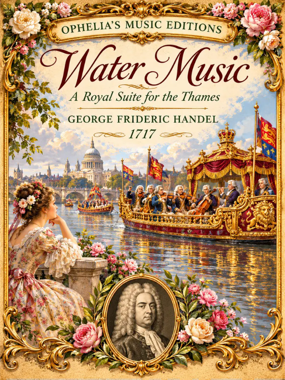

Water Music
George Frideric Handel (1685–1759) · Three suites for orchestra, HWV 348–350 · First performed on the River Thames in 1717.
Ophelia’s illustrated edition

Original Ophelia’s Music Editions illustration, created for this composition.
Listen · all three suites
17 audio files cover the movement groups in these editions. Some adjoining movements share one track; Suite I uses a licensed archival recording, while Suites II and III are performed by the U.S. Marine Chamber Orchestra. Differences in ensemble and recording character are expected.
Choose a movement below or press Play. After you start playback, the player continues through the movements in order.
Suite I · F major · HWV 348
Eight audio tracks, including combined movements · archival recording · CC BY-SA 3.0
Suite II · D major · HWV 349
Five movements · Marine Chamber Orchestra · U.S. public domain
Suite III · G major · HWV 350
Four recordings include paired dances · Marine Chamber Orchestra · U.S. public domain
Recording licenses are credited individually by movement above. The Suite I files are shared under CC BY-SA 3.0 and are presented without editing or remixing. Recordings of Suites II–III are U.S. government works. For each file, select “Recording & rights” to view its original attribution and history at Wikimedia Commons. These performances were recorded separately and are collected here solely for sequential listening.
Water Music · HWV 348–350
Complete 66-page orchestral edition of the three suites, edited by Max Seiffert (1922), derived from Chrysander’s historical edition; listed as public domain by the Petrucci Music Library (IMSLP). This full score includes all three suites, unlike a single-suite piano transcription.
If the embedded score is blocked, use the direct PDF or the free Google viewer above. Some third-party PDF servers restrict previews, so the IMSLP source page is also available.
Score citation: George Frideric Handel, Water Music (HWV 348–350), edited by Max Seiffert, Breitkopf & Härtel, 1922, 66 pages. Edition details and public-domain designation ↗.